Magia de Fogo
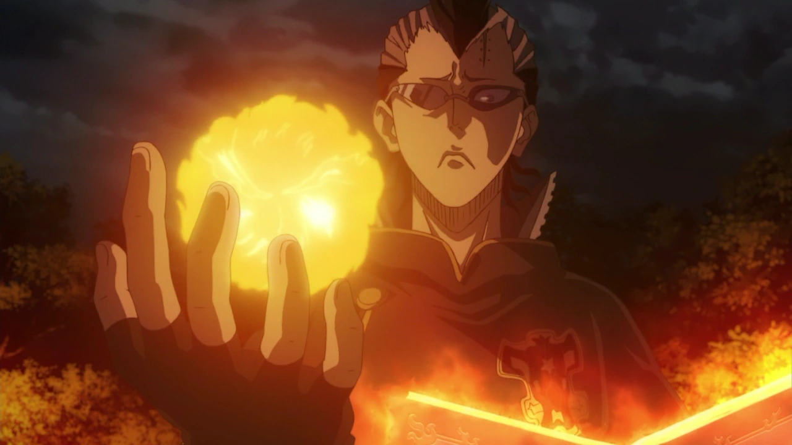
A magia de fogo é a manifestação do poder destrutivo e ardente. Mago que
domina essa escola possui alta perícia em manipular chamas, causando
danos massivos e efeitos de queimadura. Os próprios jogadores criam seus
feitiços de fogo baseados em seu desempenho e evolução na aventura,
tornando cada chama única.
-
Explosões, chamas contínuas, manipulação de calor.
-
Perícia: Alta, exige controle e experiência.
-
Periculosidade: Alta, pode causar danos colaterais.
Magia de Água
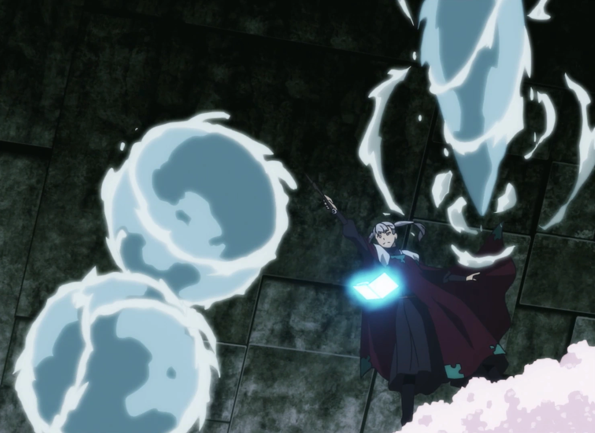
A magia de água é fluida e versátil, permitindo ao mago controlar líquidos,
curar ferimentos e criar barreiras defensivas. Assim como na magia de fogo,
os jogadores desenvolvem seus próprios feitiços de água conforme evoluem,
tornando cada manipulação única e pessoal.
-
Manipulação de líquidos, cura, escudos de água.
-
Perícia: Média a alta, requer equilíbrio e concentração.
-
Periculosidade: Média, mais defensiva e utilitária.
Magia de Ar
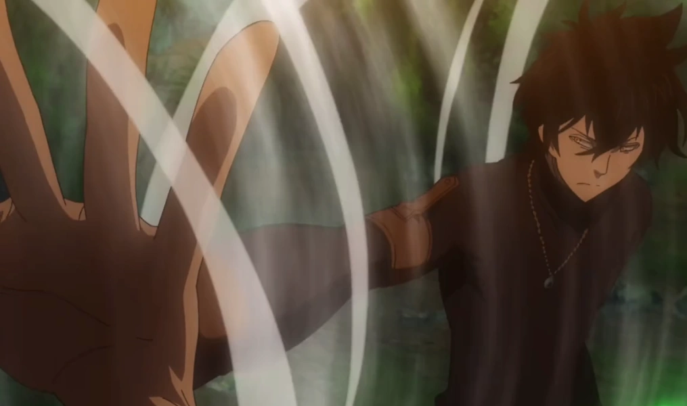
A magia de ar é rápida e evasiva, permitindo ao mago manipular ventos para
ataques, defesas e mobilidade. É uma magia que exige agilidade mental e
física.
-
Rajadas de vento, voo, aumento de velocidade.
-
Perícia: Média, requer agilidade e controle.
-
Periculosidade: Média a alta, dependendo da intensidade.
Magia de Terra
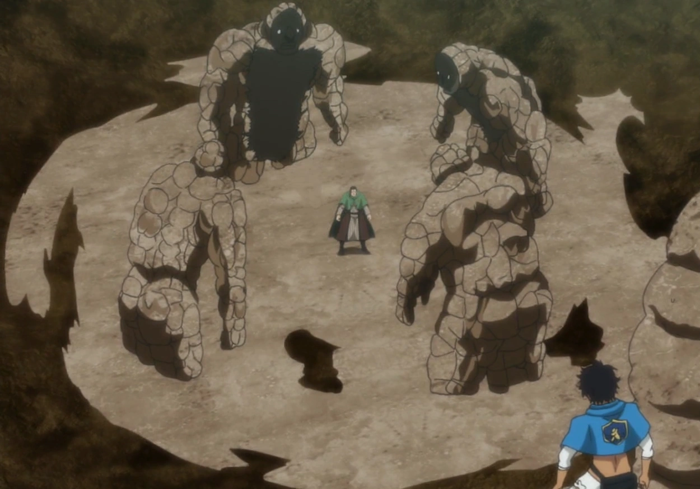
A magia de terra é sólida e resistente, focada em defesa, controle do terreno
e ataques pesados. O mago que a domina é paciente e forte.
-
Barreira de pedra, terremotos, manipulação de raízes.
-
Perícia: Alta, exige força e paciência.
-
Periculosidade: Alta, com grande poder defensivo e ofensivo.
Magia de Gelo
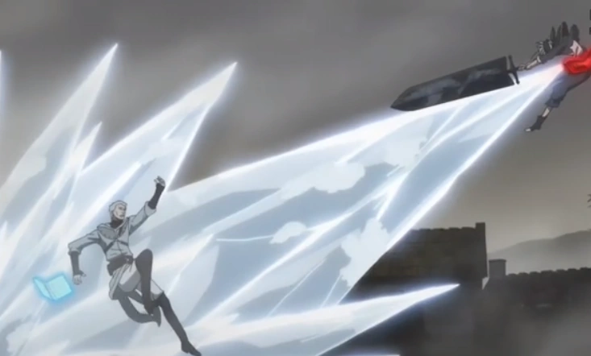
A magia de gelo é fria e controlada, capaz de congelar inimigos, criar armaduras
e manipular o frio para retardar movimentos.
-
Congelamento, armaduras de gelo, rajadas congelantes.
-
Perícia: Média, requer controle e precisão.
-
Periculosidade: Média, com controle e dano moderado.
Magia de Luz
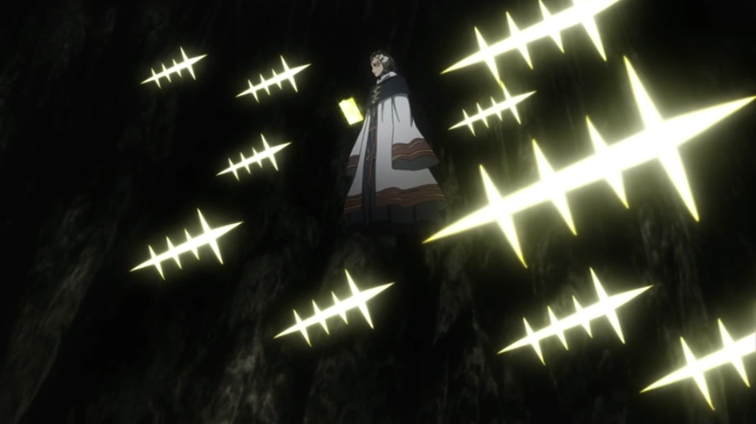
A magia de luz é pura e sagrada, usada para cura, proteção e ataques que cegam
ou purificam.
-
Cura, escudos de luz, ataques cegantes.
-
Perícia: Média, focada em suporte e defesa.
-
Periculosidade: Baixa a média.
Magia das Sombras
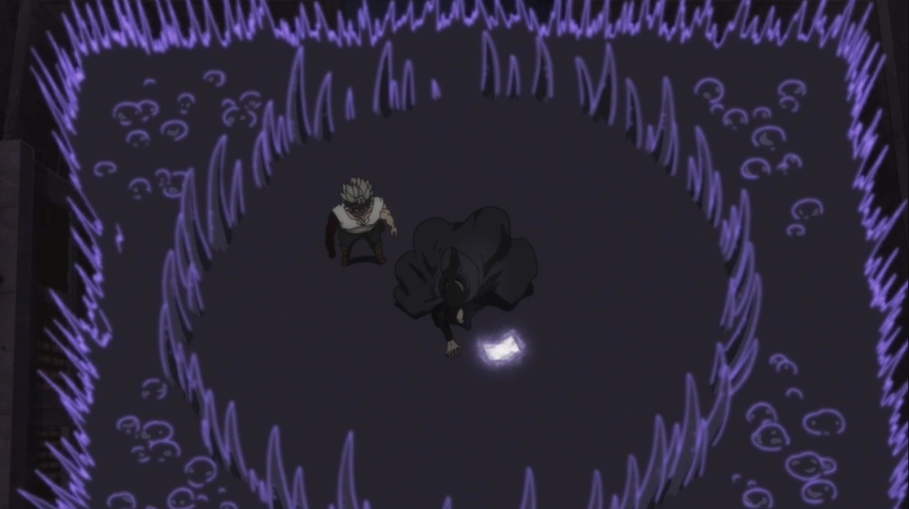
A magia das sombras é furtiva e traiçoeira, permitindo manipulação de escuridão,
ilusões e ataques furtivos.
-
Invisibilidade, ilusões, ataques de escuridão.
-
Perícia: Alta, com potencial para controle mental e dano oculto.
-
Periculosidade: Alta.
Magia de Raio
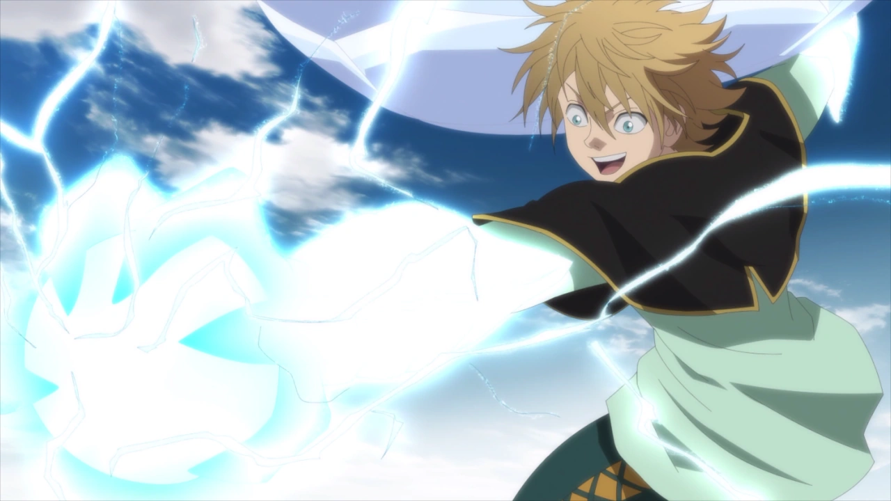
A magia de raio é rápida e poderosa, capaz de eletrocutar inimigos e desestabilizar equipamentos.
-
Descargas elétricas, paralisia, ataques rápidos.
-
Perícia: Alta, requer precisão e controle.
-
Periculosidade: Alta, pode causar danos colaterais.
Magia de Veneno
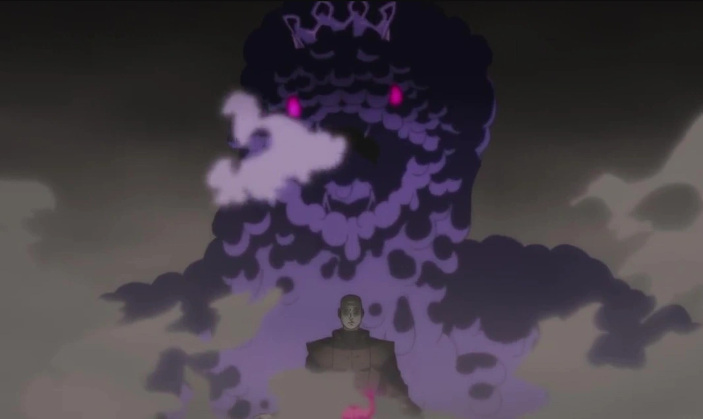
A magia de veneno envenena inimigos, causando danos contínuos e debilitando suas defesas.
-
Envenenamento, debilitação, efeitos prolongados.
-
Perícia: Média, requer conhecimento em toxinas.
-
Periculosidade: Média a alta, perigosa em combates prolongados.
Magia de Ilusão
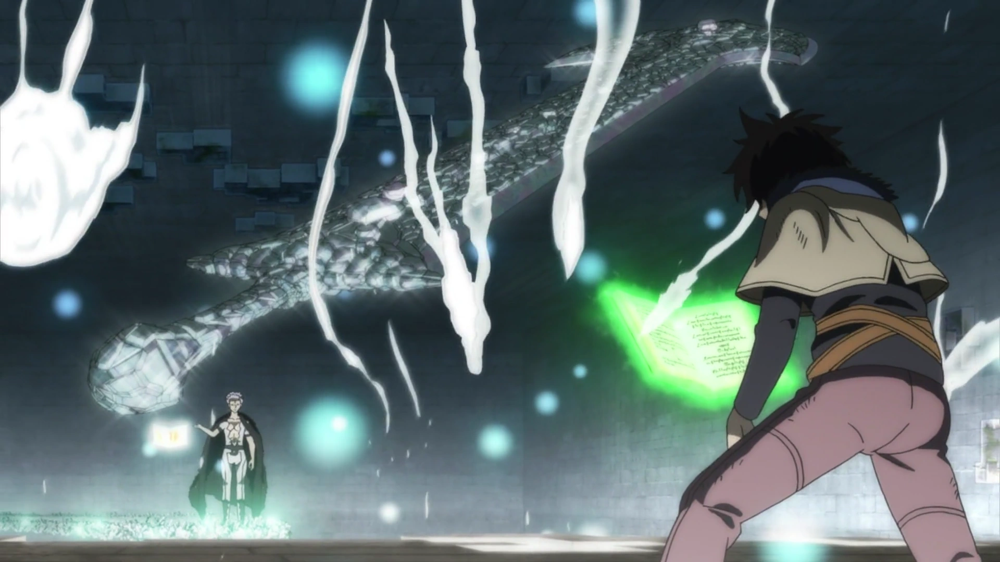
A magia de ilusão engana os sentidos, criando imagens falsas e confundindo inimigos.
-
Engano visual, manipulação sensorial, distração.
-
Perícia: Alta, exige criatividade e controle mental.
-
Periculosidade: Baixa a média, mais estratégica.
Magia de Cura
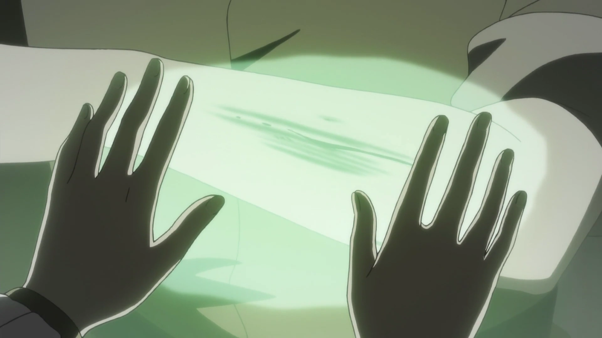
A magia de cura restaura ferimentos, remove doenças e revitaliza aliados.
-
Restauração, purificação, suporte vital.
-
Perícia: Média, essencial para suporte em batalhas.
-
Periculosidade: Baixa, focada em proteção.
Magia de Tempo
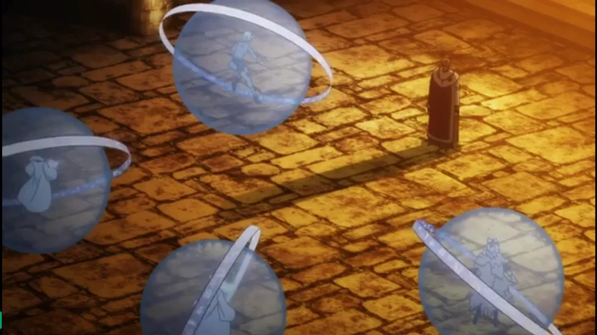
A magia de tempo manipula a passagem temporal, acelerando ou retardando eventos.
-
Aceleração, desaceleração, manipulação temporal.
-
Perícia: Muito alta, exige grande controle e concentração.
-
Periculosidade: Muito alta, pode causar efeitos colaterais graves.